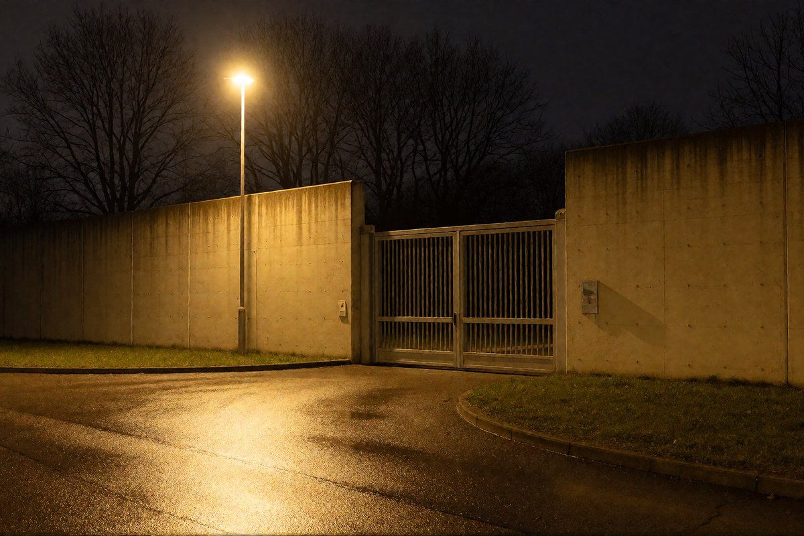

Cronaca · 20 novembre 2026
Schettino lascia Rebibbia dopo nove anni, affidato ai servizi sociali

L'ex comandante della Costa Concordia ha ottenuto l'affidamento in prova. Il tribunale di sorveglianza di Roma ha deciso dopo l'esame del percorso in carcere: la condanna a 16 anni e un mese resta.
di Franco Zanghì
Francesco Schettino è fuori dal carcere dopo più di nove anni. L'ex comandante della Costa Concordia ha ottenuto l'affidamento in prova ai servizi sociali e venerdì 20 novembre, poco prima delle 20, ha lasciato il carcere romano di Rebibbia. La notizia, data dal Quotidiano Nazionale, è stata ripresa dall'ANSA.
Schettino era detenuto dal maggio del 2017. Scontava una condanna definitiva a 16 anni e un mese per il naufragio del 13 gennaio 2012 davanti all'isola del Giglio, in cui morirono 32 persone. Secondo l'ANSA la decisione del tribunale di sorveglianza di Roma è arrivata dopo un esame del percorso rieducativo e della condotta tenuta in carcere.
Che cosa cambia
L'affidamento in prova, previsto dall'articolo 47 dell'ordinamento penitenziario, non cancella la condanna e non cancella le responsabilità accertate. Permette di scontare il resto della pena fuori dal carcere, con un programma di reinserimento seguito dall'Ufficio per l'esecuzione penale esterna. Alla violazione anche di una sola prescrizione la misura si revoca e si torna in cella.
Secondo il Sole 24 Ore l'affidamento è stato disposto in Campania e il fine pena, anticipato per la buona condotta, è fissato a luglio del 2030. Ad aprile del 2025, scrive Open, Schettino aveva rinunciato alla semilibertà, che lo avrebbe costretto a rientrare a Rebibbia ogni notte. La sua avvocata, al Quotidiano Nazionale, ha parlato di una valutazione «estremamente positiva» da parte di tutti gli operatori.
Quella notte al Giglio
La nave era partita da Civitavecchia con circa 4.200 persone a bordo. Davanti al Giglio il comandante decise il cosiddetto «inchino», un passaggio vicinissimo alla costa. Poco prima delle 21:45 la Concordia urtò gli scogli delle Scole. Si aprì uno squarcio nella fiancata e la nave si piegò su un fianco davanti al porto.
Il processo ha accertato anche i ritardi e le omissioni nei soccorsi e l'abbandono della nave. Di quella notte molti ricordano un altro nome: Gregorio De Falco, l'ufficiale della capitaneria di porto di Livorno che al telefono ordinava al comandante di tornare a bordo.
Il commento dell'autore
Qui ci sono due verità, e vanno tenute insieme. La prima: la Costituzione dice che la pena deve tendere alla rieducazione del condannato, e un tribunale ha stabilito che quel percorso c'è stato. Non è un favore, è la legge, e vale per tutti, anche per chi è antipatico.
La seconda: quella notte 32 famiglie hanno perso qualcuno, e per loro nessuna misura alternativa chiude i conti. A loro si deve rispetto, e un po' di silenzio, non i salotti televisivi.
Fonti
- ANSA Campania, «Schettino esce dal carcere, affidato ai servizi sociali in Campania», 21 novembre 2026
- Il Sole 24 Ore, «Francesco Schettino, fine pena anticipata a luglio 2030 per buona condotta. Lascia il carcere per i servizi sociali», 21 novembre 2026
- Il Fatto Quotidiano, «Schettino esce dal carcere dopo 9 anni: affidamento ai servizi sociali», 21 novembre 2026
- Quotidiano Nazionale, la notizia dell'uscita da Rebibbia e le parole della difesa
- Open, la rinuncia alla semilibertà dell'aprile 2025
- Ordinamento penitenziario, legge 354 del 1975, articolo 47
Il dato sulla pena residua è stato corretto dopo il ricontrollo: il Sole 24 Ore indica il fine pena anticipato a luglio del 2030, mentre fonti precedenti parlavano di circa sei anni e mezzo ancora da scontare. Il provvedimento del tribunale di sorveglianza non è pubblico.